Your Mac apps
and websites. One switch.
One click.
Switch your Mac’s appearance from the menu bar. Add Dusk for Chrome separately to darken websites that stay light.
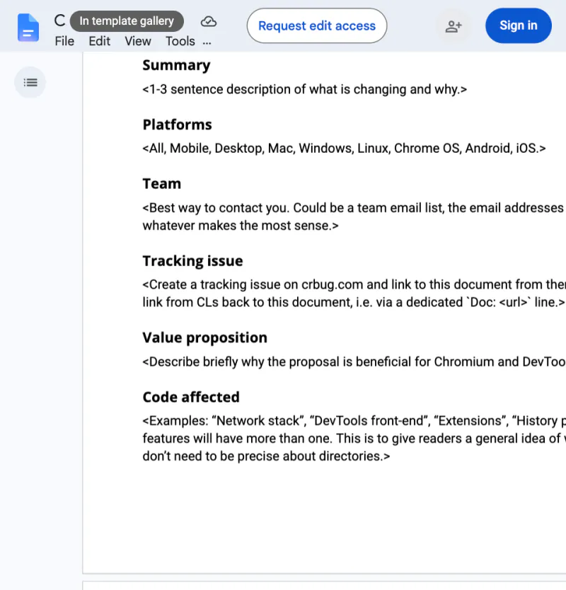
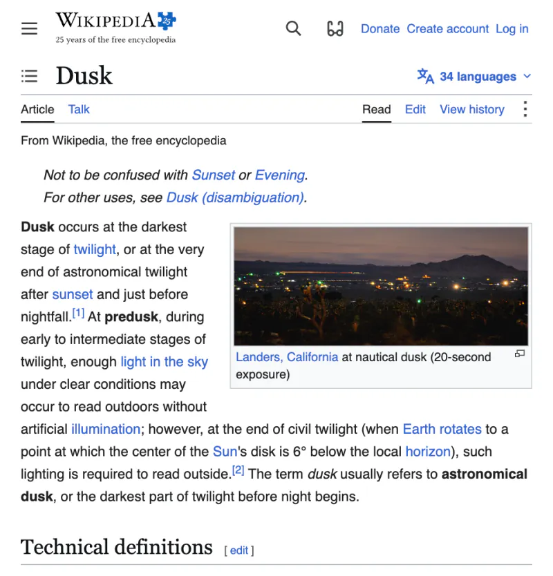
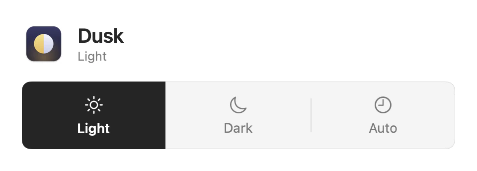
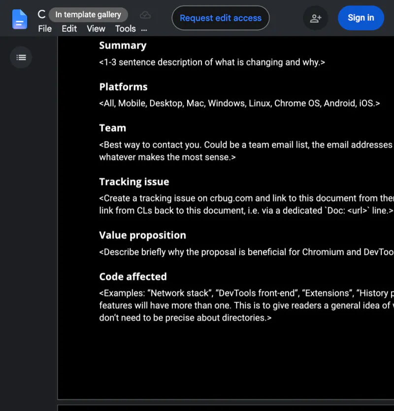
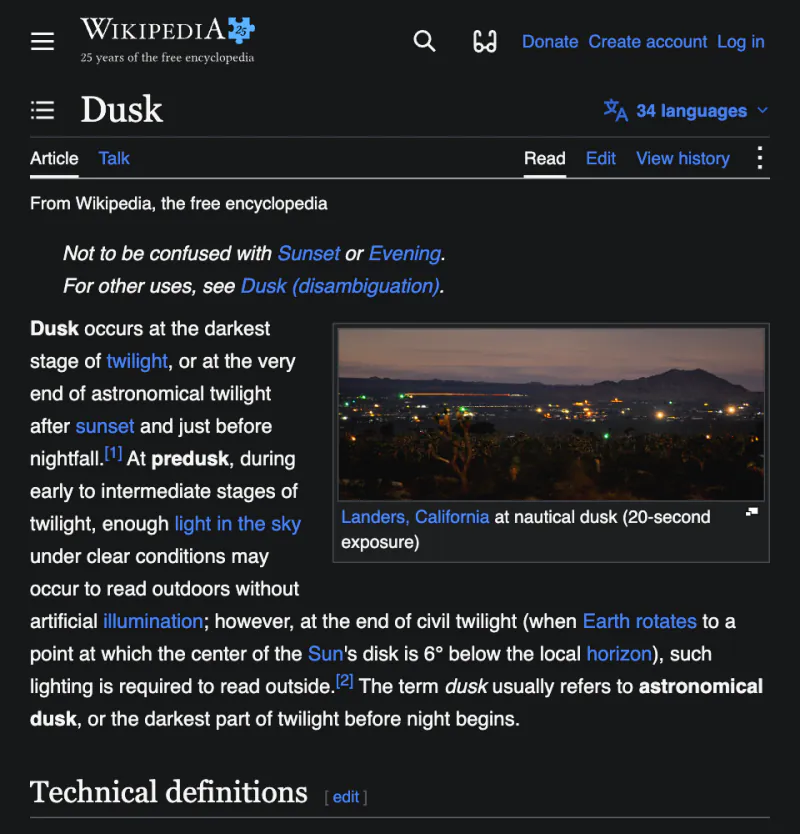
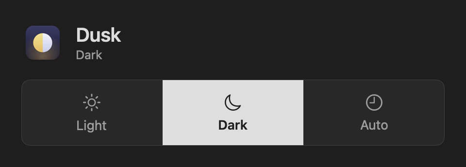
Dark mode for websites in Chrome
Dusk darkens light pages while preserving photo colours where possible. Choose a look for each website or use Restore this website if a page looks wrong.
Add to ChromeFree · No Dusk account · Dusk for Chrome 0.3.0
Set up on a computer
- Add Dusk from the Chrome Web Store, then pin it from Chrome’s Extensions menu.
- Open Dusk and choose Always dark or Follow system. On a Mac, set Chrome’s Appearance Mode to Device to follow your Mac.
On your phone? Share or bookmark this page for later, or search for Dusk for Chrome: Automatic Dark Mode in the Chrome Web Store on your computer.
Get help with Dusk for ChromeHow Mac apps and websites follow
-
Your Mac's dark mode
Your Mac apps
Not websites that have no dark mode
-
A dark mode browser extension
Not your Mac apps
Websites
-
Dusk
Both, with Dusk for Mac and Dusk for Chrome
How it works
Get Dusk for Mac
It lives in your menu bar. Most apps need nothing, because they follow your Mac by themselves. A few need a one-time setting, and Dusk's checklist shows you where.
Add Dusk for Chrome
It darkens websites that have no dark mode when your browser is dark. To follow your Mac, keep Settings → Appearance → Mode on Device in Chrome.
Press Light or Dark
One click changes your Mac, the apps that follow it and those websites. Or choose Auto: sunset to sunrise, or your own hours.
Only want websites? Dusk for Chrome works by itself, without the Mac app, and its popup can keep pages dark while your computer is light. Chrome help covers the rest.
What it does
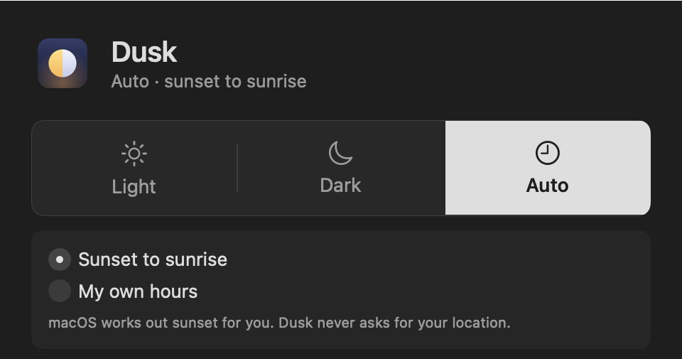
Your Mac, from the menu bar
Light, Dark or Auto, with a checklist for apps that need a one-time setting. Keep one app dark or light whatever the switch says, where that app allows it. Dusk reopens an app only with your permission.
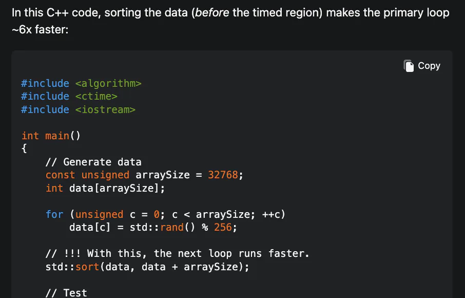
Documents, articles, shops and web apps
Google Docs and Sheets go dark with the page, and so do long articles, shopping pages and web apps. Menus, hover highlights and focused fields stay readable. A site that already shows the look you asked for keeps its own theme.
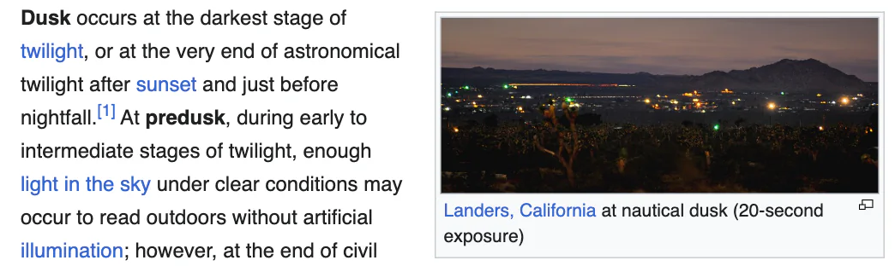
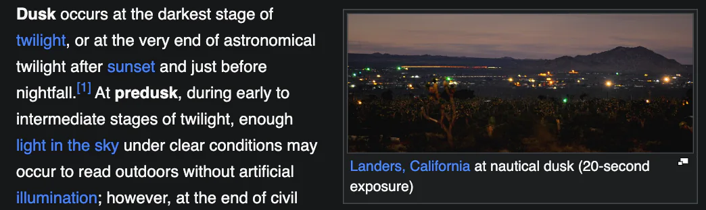
Photos keep their colours
Dusk changes a page's grey surfaces and its text, not your pictures. Photos and video keep their own colours, though some images or embeds may still look wrong. A picture placed inside a Google Doc changes with the paper.
Your choice, site by site
In the popup, choose Follow, Dark, Light or Off for the site you are on. If a page looks wrong, Restore this website puts it back, with an Undo.
It works the other way too: when you switch to light, Dusk can lighten many dark-only sites.
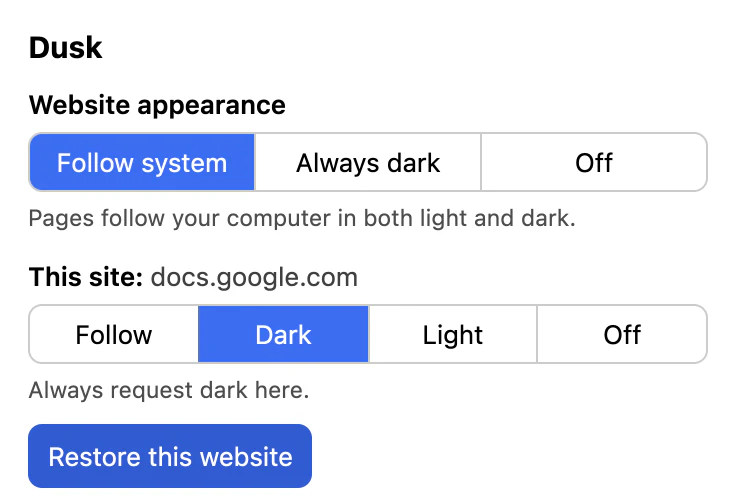
What Dusk cannot do
On a Mac
- Some apps, such as Calculator or Minecraft, have one fixed look. Nothing can change that, and Dusk says so.
- A few apps have their own theme setting fixed to Light or Dark. They need a one-time change to System inside the app, and Dusk's checklist shows where.
- A few apps only read their look when they open, so they must reopen to change. Dusk does that only with your permission, app by app.
- macOS does not let one standard Mac app stay dark while the rest is light. Dusk can keep such an app light, but not dark.
- When you choose to keep an app light, the direct-download edition adds or removes a standard macOS preference for that app. Separately, optional sync changes one documented theme value in supported apps' settings files and keeps a backup.
- The App Store edition is not released yet, so the download on this page is the direct-download edition.
In Chrome
- To follow your Mac, Chrome's Settings → Appearance → Mode must be Device. If it is Light or Dark, websites get that, whatever your computer shows.
- Coloured areas, such as a brand's banner or a coloured page background, keep their colour, so some pages stay partly light in dark mode.
- In light mode, photo-heavy pages, such as streaming and game landing pages, may stay mostly dark, because Dusk keeps pictures as they are.
- Some chart lines drawn in SVG, and outlines drawn as shadows, are not recoloured, so a dark line can stay dark on a darkened page.
- Chrome's own pages, such as settings and the Chrome Web Store, cannot be changed by any extension. PDFs and images opened in Chrome's own viewer are left as they are.
No account. No analytics.
- Dusk for Mac keeps your settings on your Mac. It can check its update feed; you can turn automatic checks off.
- The direct-download edition's first switch may ask to control System Events, which it uses for the system appearance switch.
- Dusk for Chrome processes appearance locally and may re-fetch a page's images to inspect their colours, without cookies or a referrer. The image's host sees a normal request, including your IP address and the page's site. If a picture inside an embedded element fails to load, Dusk may load it once more from the page, as the page itself would.
- Its settings and remembered sites stay in this Chrome profile on this computer. Nothing is sent to Dusk automatically; optional support reports reach us only if you send the email.
- Chrome's install prompt says Dusk can read and change your data on websites, because it recolours pages as they load. It does not collect or store page text, form data, cookies or credentials.
- Automatic detection does not remember visits in Incognito windows. Settings you explicitly save in the popup may remain in Chrome.
Read the direct-download and Chrome privacy policy, or the App Store edition's policy.
Get Dusk
Direct download for Mac, version 1.0.5. Light, Dark and Auto from your menu bar, with app setup guidance, per-app choices and scheduling. Free. Requires macOS 14 or later; supports Apple silicon and Intel Macs. Its updater can contact the update feed.
Dusk for Chrome, version 0.3.0. Darkens websites that have no dark mode while preserving photo colours where possible. Free. It works by itself; the Mac app is not required. The Chrome Web Store build does not include the optional Mac profile connection.
Mac App Store edition · Release pending. It offers Light, Dark and a daily schedule after a guided setup with two Apple Shortcuts. App Store support.